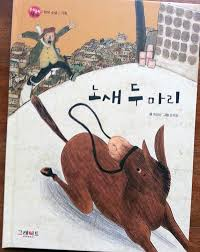

지은이:최일남

고향을 등지고 도시 변두리에 자리 잡은, ‘나’의 아버지는 생계를 위해
노새로 연탄 배달을 한다. ‘나’의 동네 옆에 새동네가 들어오면서 노새를 신기해하는 사람들로 인해 연탄 주문이 늘었지만, 곧 관심이 없어지고 주문도 줄어든다.그러던 어느 날 연탄을 싣고, 노새가 도망을 간다. 아버지와 ‘나’는 열심히 노새를 찾지만 결국 찾지 못하고 돌아오는데, 도망친 노새가 사고를 치고 다녀 경찰서에서 오라고 했다는 말을 듣고 아버지는 결찰서로 향한다. 집을 나서는 아버지의 모습을 보며 ‘나’는 아버지와 노새 모두 도시적 삶에 적응하며 사는 것이 힘겨운 일임을 깨닫는다.